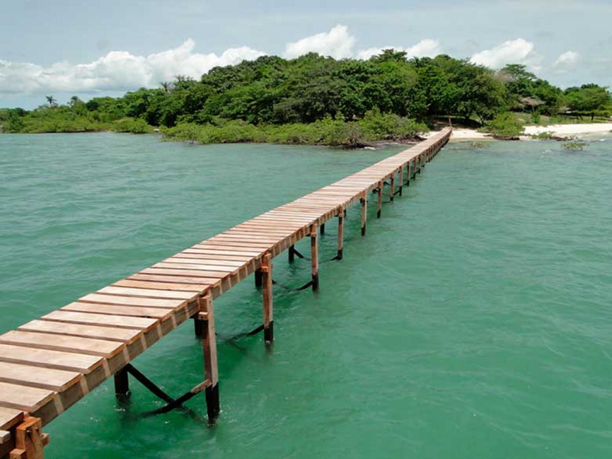
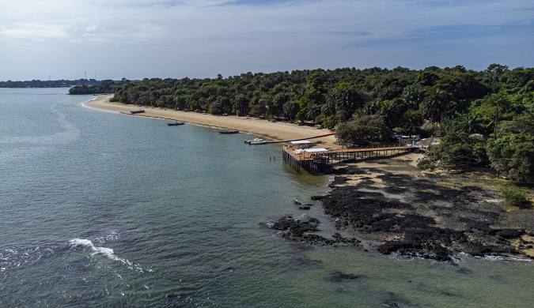
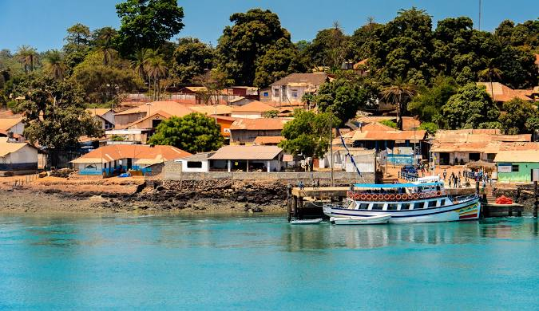

Nossa Jornada, Nosso Povo
Raízes e Reinos
Antes da chegada dos europeus, a região que hoje é a Guiné-Bissau era o berço de diversas culturas vibrantes. Fomos influenciados pelo grandioso Império do Mali e o Reino de Kaabu. Estas terras eram rotas comerciais importantes, ricas em tecidos, ouro e conhecimento.
A Colonização
No século XV, navegadores portugueses chegaram à costa. Seguiram-se séculos de resistência contra o tráfico de escravos e o domínio colonial. Cacheu e Farim tornaram-se postos de controlo, mas o espírito de liberdade guineense nunca foi subjugado.
A Independência
A resistência uniu-se sob a liderança de Amílcar Cabral. A nossa luta de libertação (1963-1974) é um dos maiores exemplos de unidade africana. A independência foi proclamada em Madina do Boé em 1973, devolvendo a dignidade ao nosso povo.
Explorar o Arquipélago
Descubra os segredos das 88 ilhas e ilhéus das Bijagós.

Ilha de Orango
Famosa pelos seus hipopótamos de água salgada, únicos no mundo, e pelas tradições matriarcais.
Saber mais
Ilha de Rubane
Onde o luxo encontra a natureza selvagem. Praias virgens de areia branca e águas cristalinas.
Saber mais
Ilha de Bubaque
O coração do arquipélago, com o seu mercado vibrante e porto histórico cheio de vida.
Saber maisConversor CFA
Planeia a tua viagem: converte Franco CFA para Euro.
Taxa Fixa: 1€ ≈ 655.957 XOF